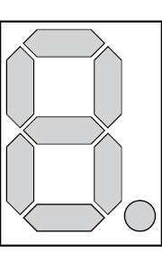
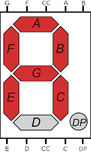
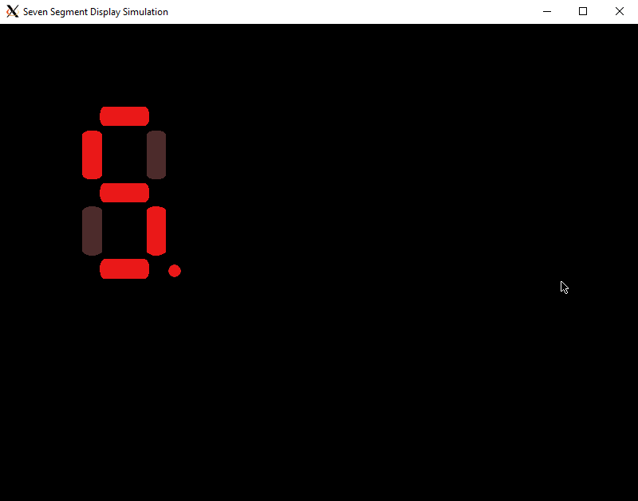
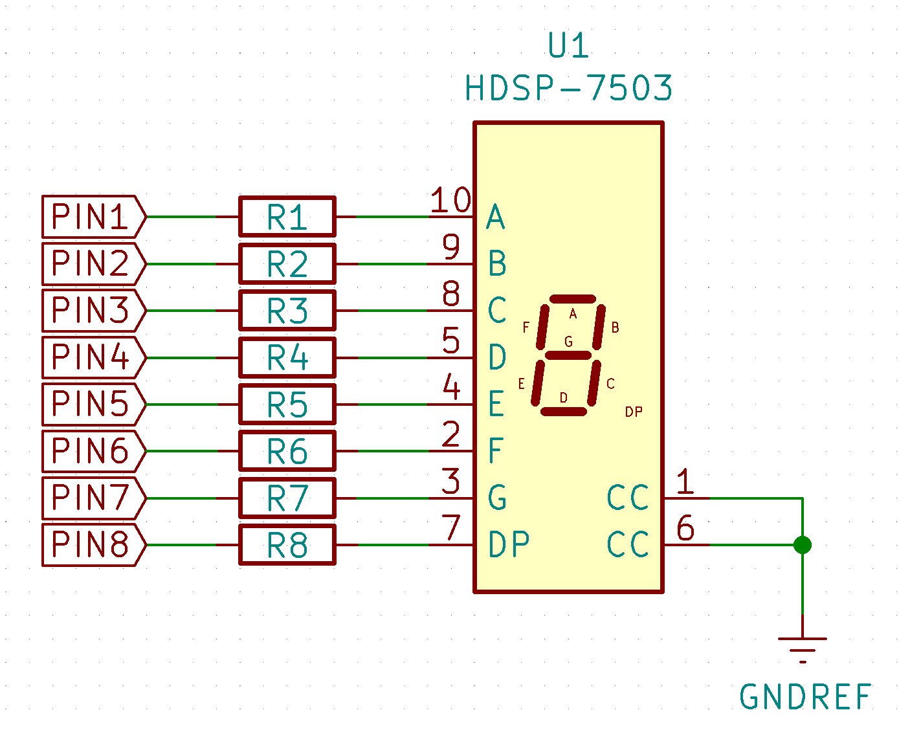
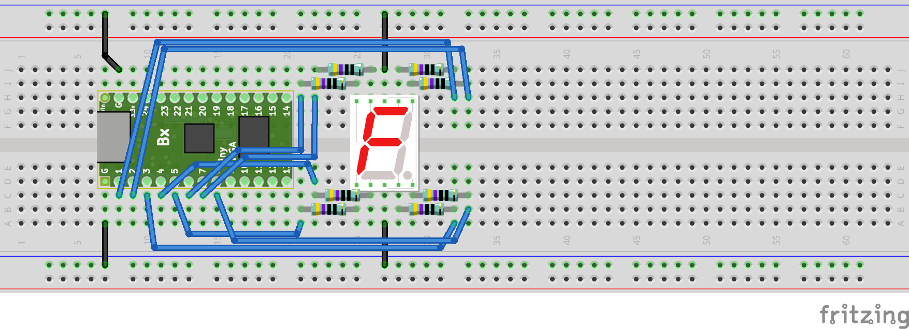
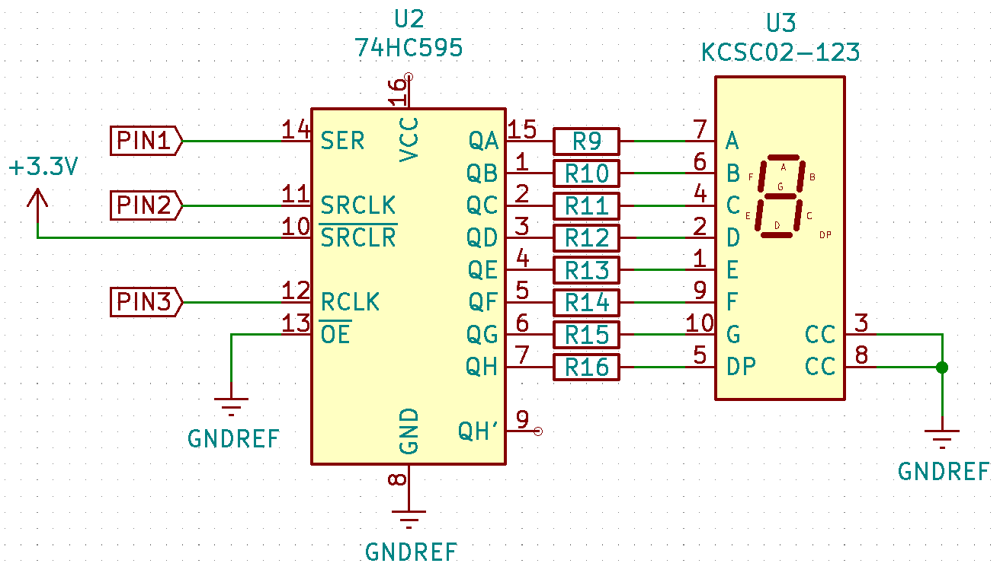
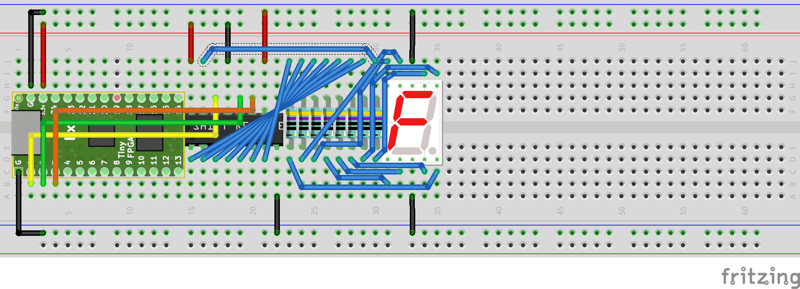

FPGA Design for Software Engineers, Part 3 - Seven Segment Displays
Jeff DeWall April 20, 2020 #FPGA #VerilogLast time we took a break from Verilog and hardware design to improve our build system. This time we're back to Verilog and for our next FPGA project we'll create a seven segment driver circuit that will allow us to output hex characters to a single display.
A seven segment display is a set of LEDs arranged like an eight plus a decimal point like you see on cheap alarm clocks and the like.

Article Series
- Verilog and State Machines
- Simulation and Build Tools
- Seven Segment Displays
- Docker Builds
- Build System Updates, ECP5 Support
- Time-Multiplexed Seven Segment Displays
Updates Feb 23, 2021
As mentioned at the end of this article, I've moved the main repository over to GitHub, so the article has been updated with links to that repo.
Our first pass
First we'll build up a decoder module that takes a hexadecimal digit and outputs a byte to turn on the correct segments. In the first example, we'll simply put all 8 LED values onto FPGA output pins. Later we'll look at decreasing the number of physical pins we need using shift registers.
There are many tutorials online discussing the basics on seven segment displays which are very good. For instance, the tutorial on Jameco, where I tend to grab many electronics components from, is quite good.
One thing to keep in mind when laying out your circuit is whether you have common anode or common cathode seven segment displays. You have common anode if you hook the shared pin of the display to Vcc and common cathode if you hook it to GND. In my case I have common cathode segments, so all of the schematics are assuming you're using the same.
Building a seven segment display encoder in Verilog
The main idea is that we take in 4 bits as a single hex digit and output the 8 values for each of the segments, and the decimal point, that we want to light up on the seven segment display. If we assign a bit to each of the segments and decimal point, we can then come up with our mapping. First lets look at the pinout of the seven segment displays I'm using:

The CC pin here on the top and bottom are the common cathode, and will be hooked to ground.
You can choose whatever mapping you want, but in my case, I chose to have the decimal point in the most significant bit (MSB) and starting with a on the top left, going around clockwise for the lower bits. The one weird thing is that this swaps the f and g segments, at least as named, in the mapping but it made more sense to me to follow a clock-wise pattern in this case.
Given the pinout above, we'll start with bit 0 as a at the top to the right of the common pin and move clockwise around the device, but skipping the decimal point until the end. That gives us a mapping where we assign for the eight output bits as dp f g e d c b a
For example, with the above image we have the letter a lit up. To achieve that we light up all of the segments except d at the bottom and the decimal point. That gives us a binary value of: 0 1 1 1 0 1 1 1 which converted to hex is 0x77.
In Verilog, our module just needs a case statement to setup the mapping as a combinational circuit:
// A 4bit (single hex digit) to 7segment display decoder.
module hex_to_7seg
(
i_val
, o_seg_vals
);
input [3:0] i_val;
output reg[7:0] o_seg_vals;
always @(*)
begin
case(i_val)
'h0: o_seg_vals = 'h5f;
'h1: o_seg_vals = 'h06;
'h2: o_seg_vals = 'h3b;
'h3: o_seg_vals = 'h2f;
'h4: o_seg_vals = 'h66;
'h5: o_seg_vals = 'h6d;
'h6: o_seg_vals = 'h7d;
'h7: o_seg_vals = 'h07;
'h8: o_seg_vals = 'h7f;
'h9: o_seg_vals = 'h6f;
'ha: o_seg_vals = 'h77;
'hb: o_seg_vals = 'h7c;
'hc: o_seg_vals = 'h59;
'hd: o_seg_vals = 'h3e;
'he: o_seg_vals = 'h79;
'hf: o_seg_vals = 'h71;
default: o_seg_vals = 'h00;
endcase
end
endmoduleYou can follow along with the code in the repository branch for this article.
The module itself lives in hex_to_7seg.v in the lib/ folder, which is where I'm placing any modules that we'll reuse across projects. Our CMake script we discussed last time also assumes this is where extra modules live.
We use a * for the sensitivity list, so that any time i_val changes the outputs should be updated. That is, this is like the half-adder we made in the first article and is combinational, i.e. doesn't have any state of its own; the output only depends on the current input.
The case statement maps all of the values on the 4-bit input to the segments as we outlined above. We use the hexadecimal constant notation on the case labels and the segment values, 'h<X>, although we could have just as easily used decimal or the binary 'b<WXYZ> binary notation.
Connecting our Counter to the Display
For this first test of the seven segment decoder, we'll output all of the segment values as individual pins, using 8 output pins PIN1-PIN8 to drive our display. You can find the code in the 02_seven_seg_parallel/ folder.
We create the top module (in top.v) to have the following port list:
// look in pins.pcf for all the pin names on the TinyFPGA BX board
module top (
input CLK // 16MHz clock
, output LED // User/boot LED next to power LED
, output USBPU // USB pull-up resistor
, output PIN_1 // 7-seg 'a'
, output PIN_2 // 7-seg 'b'
, output PIN_3 // 7-seg 'c'
, output PIN_4 // 7-seg 'd'
, output PIN_5 // 7-seg 'e'
, output PIN_6 // 7-seg 'g'
, output PIN_7 // 7-seg 'f'
, output PIN_8 // 7-seg 'dp'
);We use a counter like in the previous examples, using a few bits as the input to our decoder. We define some constants for which bit is the low bit and which is the high bit, which we change depending on if we build for simulation or for synthesis on the real board, similar to how we did in the state_machine example.
We also declare an instance of our decoder module, hooking the counter in as the input and tying the output to a set of wires declared in our top module.
wire [7:0] seg_out;
// Used later to avoid a warning.
wire _seg_unused;
hex_to_7seg segDisplay(
.i_val(counter[HIGH_BIT:LOW_BIT]),
.o_seg_vals(seg_out)
);Here we are instantiating the hex_to_7seg module that we defined above, giving it a name (which we don't care about here) of segDisplay. We provide the input and output connections to the module using named arguments: the .i_val(XYZ) syntax. Notice i_val and o_seg_vals are the parameter names of the ports in the hex_to_7seg module definition above.
We could also use positional arguments, but since Verilog supports named parameters, we might as well use them to keep things easier to maintain in the future. By using named parameters, even if we rearrange the order of the arguments in the module definition, we'll match things up properly.
The last major piece in the top module is to take the output from our decoder and assign it to our output pins:
assign {PIN_7, PIN_6, PIN_5, PIN_4, PIN_3, PIN_2, PIN_1} = seg_out[6:0];
assign _seg_unused = seg_out[7];
assign PIN_8 = counter[LED_BLINK_BIT];Since we are not outputting a value that ever turns the decimal point on from our decoder, we don't use the MSB value from the seg_out wires and instead assign it to an unused wire to avoid a warning.
We instead assign the value of the counter's LED blinking bit to our decimal point so that it will blink on and off as we count up.
Adding a mock seven segment display to our test bench
Now on the simulation side, we need to have a class that takes in the output from our circuit and lights up mock LED segments so we can see if everything works as we expect. We could of course just create a waveform to check things like with the state_machine but since we have a fancy SFML setup already, let's make a graphical example.
If you look in the repo's assets/ folder, you'll see some amazing programmer art of horizontal, vertical and decimal point LED segments for both on and off states. We'll load these textures and use them in 8 individual SFML sprites that we'll manually place into a decent location to mimic a real seven segment display.
You can see the mock seven segment display code in the support/SevenSegDisplay.h header and its corresponding support/SevenSegDisplay.cpp source file.
The code here is pretty simple, we provide a reference to a struct of textures to use for the various segment states and the segment display class provides an interface for setting the state of each segment and drawing it to the screen.
In the main simulation file we load up our textures and create our mock seven segment display with the following code:
SevenSegDisplayTextures textures;
textures.horzOff.loadFromFile("assets/horz_segment_off.png");
textures.horzOn.loadFromFile("assets/horz_segment_on.png");
textures.vertOff.loadFromFile("assets/vert_segment_off.png");
textures.vertOn.loadFromFile("assets/vert_segment_on.png");
textures.decimalOff.loadFromFile("assets/dp_segment_off.png");
textures.decimalOn.loadFromFile("assets/dp_segment_on.png");
SevenSegDisplay seg(textures);
seg.position = sf::Vector2f(100.0f, 100.0f);then in our simulation loop, after running the circuit however many number of ticks per frame we want, we clear the screen, update each segment's current state from our output pins, and then draw the result to the screen.
// Clear screen
renderWin->clear();
seg.setSegment(Segment::A, tb->m_core->PIN_1);
seg.setSegment(Segment::B, tb->m_core->PIN_2);
seg.setSegment(Segment::C, tb->m_core->PIN_3);
seg.setSegment(Segment::D, tb->m_core->PIN_4);
seg.setSegment(Segment::E, tb->m_core->PIN_5);
seg.setSegment(Segment::F, tb->m_core->PIN_6);
seg.setSegment(Segment::G, tb->m_core->PIN_7);
seg.setSegment(Segment::DP, tb->m_core->PIN_8);
seg.draw(*renderWin.get());Running the simulation
You can build the simulation and synthesize the project using our CMake/Conan workflow that we developed last time:
# Assuming you're in the 02_seven_seg_parallel/ folder.
mkdir -p build && cd build
conan install ..
cmake ..
cmake --build .If you run the simulation (in WSL):
cd bin
DISPLAY=:0 ./seven_seg_parallelYou should see the following window pop up with our segment display counting up in hexadecimal:

Laying it out on a breadboard
So far we've been strictly in the realm of simulation or using the built in LED. Now we're going to build our circuit out using a breadboard and wires to hook everything together.
To start with we'll look at the schematic view to see how things are hooked together. This was drawn up in KiCad:

We will power the TinyFPGA board itself through USB, and we can use the GND pins on the TinyFPGA board to complete the circuit for the LEDs. The output pins need to go through current-limiting resistors when paired with the LEDS in the seven segment display, or else when we pull a pin high it will be short-circuit and we could burn up our chip.
A minor note, but in the schematic I'm using a pin compatible part with package KCSC02, which is not the same physical package as the components I'm using on my breadboard which are in package 5611AS. The KCSC one, which I was able to find in the KiCad library, is a surface mount package versus the through-hole ones we'll use on the breadboard.
When we lay it out in real life, it will look something like the following. Here I'm using the program Fritzing to diagram out how the breadboard looks and we'll break it down as the layouts get more complicated in the future.

If we look at the Ice40 datasheet, and look at the I/O DC electrical characteristics table in section 4.14 on page 25, we see that the max current for a normal pin is 8 milliamps for the 3.3V the board uses. We're not configuring the pins as high current LED outputs in this case, so we'll use the lowest number in that table.
Given Ohm's Law, we can choose the value of the resistor so that we get a current of ~8ma. R = V / I = 3.3V / 0.008 A = 412.5 Ohms, so a standard 430 or 470 Ohm resistor will be close enough for our purposes. In my case, I went with 470 Ohm ones.
If we deploy the design to our circuit above, we'll see our implementation running in meat space
Driving a seven segment display with fewer pins
Everything works fine so far, but we're rather limited because we are using 8 of our 40ish pins on our TinyFPGA-BX board to drive only a single seven segment display. It would be nicer if we didn't need to use so many pins because they're a pretty restricted resource for us.
What we can do, since the segment displays will update at a much slower pace than our circuit design runs, is use a shift register to use only three pins of the FPGA to get the eight values needed out, and use the shift register chip to drive the actual seven segment display.
Just like with seven segment displays themselves, there are also many tutorials out there describing shift registers in detail, so I won't repeat all of details here. The short story is that you can pipe in bits serially, one at a time, and then 'latch' (i.e. store and use) the last 8 values you sent in and have them show up as a parallel set of signals from the shift register.
One tutorial I found from a quick search is this one on lastminuteengineers.com and looks pretty good.
Creating a shift register in Verilog
On the FPGA side, we'll be doing the opposite: taking a parallel signal, the byte for the seven segment display, and outputting a serial signal. That is to say, at one clock we'll save off all of the bits of the input byte, and then over the course of a number of clock cycles after that, sent it out one bit at a time.
On the outside, on our breadboard, we'll hook that up to a 74HC595 serial in, parallel out shift register. To output into a 74HC595, we just need to have the byte we want to send out coming into our module as input, and then have the 3 pins needed to shift it out. That is, we'll have the output data value pin, a clock pin for the data signal, and a signal to indicate we're done shifting data and that the 74HC595 shift register on the breadboard should latch the current value onto its eight output pins.
In terms of implementation of our shift register module, we also need to have an input to trigger us to start shifting out the current byte. We then move through a state machine that shifts out each bit of our byte and finally triggers the latch signal before moving back to a waiting state.
The code for the shift register is in /lib/shift_reg_output.v:
// This module shifts out data to a 74HC595 shift register given
// a maximum 16 MHz clock input (from Tiny FPGA BX).
//
// Module based on information from:
// https://components101.com/ics/74hc595-shift-register-pinout-datasheet
module shift_reg_output
(
i_clk
, i_reset
// The value we want to shift out serially.
, i_value
// toggle switch to stream out the data.
, i_enable_toggle
// serial data
, o_data_val
// clock of data signal
, o_data_clock
// latch trigger to show output of shift register on output pins
, o_latch_shifted_value
);
// A parameter that lets us parameterize the shift register over the 2^n bits
// we want to shift out. By default we use a single byte (2^3 bits)
parameter DATA_WIDTH = 3;
localparam DATA_SIZE = 1 << DATA_WIDTH;
input [DATA_SIZE-1:0] i_value;
input i_clk;
input i_reset;
// When a new value is to be streamed out, this value must be toggled to
// let us know to do that. The assumption is that we are streaming out
// the value much faster than the toggle.
input i_enable_toggle;
reg last_enable_toggle;
output reg o_data_val;
output reg o_data_clock;
output reg o_latch_shifted_value;
// Our state machine state constants.
localparam WAIT_STATE = 0;
localparam SHIFT_STATE = 1;
localparam SHIFT_TICK = 2;
localparam STORE_STATE = 3;
// We have four states, so we can hold our state in two bits.
reg[1:0] current_state = WAIT_STATE;
reg [DATA_SIZE-1:0] shift_value;
reg [DATA_WIDTH+1:0] shift_cnt;
always @(posedge i_clk)
begin
// On reset simply go back to our waiting state.
if(i_reset) begin
current_state <= WAIT_STATE;
end
else begin
case(current_state)
WAIT_STATE:
begin
// Check for starting a new shift out process.
if(i_enable_toggle != last_enable_toggle) begin
last_enable_toggle <= i_enable_toggle;
current_state <= SHIFT_STATE;
shift_value <= i_value;
shift_cnt <= 0;
o_data_val <= i_value[DATA_SIZE-1];
end
else begin
o_data_val <= 0;
end
o_data_clock <= 0;
o_latch_shifted_value <= 0;
end
SHIFT_STATE:
begin
// clock goes high, meaning the value of data should be
// sampled on the receiving end.
o_data_clock <= 1;
o_latch_shifted_value <= 0;
// Since we latch the MSB in this clock tick, we also want
// to shift our value over by one for the next time we want
// to load a bit for output.
shift_value <= shift_value << 1;
shift_cnt <= shift_cnt + 1;
current_state <= SHIFT_TICK;
end
SHIFT_TICK:
begin
// Set the output value to the upcoming bit value for the next
// tick.
o_data_val <= shift_value[DATA_SIZE-1];
o_data_clock <= 0;
o_latch_shifted_value <= 0;
if(shift_cnt == DATA_SIZE) begin
// Our count reached the end of our number of bits to shift
// out.
current_state <= STORE_STATE;
end
else begin
// We're not done, so back to the shift state
current_state <= SHIFT_STATE;
end
end
STORE_STATE:
begin
// Raise the latch signal high so that the receiving shift reg
// will store the current data and present it on its outputs.
o_data_clock <= 0;
o_latch_shifted_value <= 1;
current_state <= WAIT_STATE;
end
endcase
end
end
endmoduleNow in our new top module in 03_seven_seg_shift_reg/top.v, we don't need to use 8 output pins
since we'll shift out our display value one bit at a time. Instead our port map will now look like this:
// look in pins.pcf for all the pin names on the TinyFPGA BX board
module top (
input CLK // 16MHz clock
, output LED // User/boot LED next to power LED
, output USBPU // USB pull-up resistor
, output PIN_1 // shift register data signal
, output PIN_2 // shift register data clock
, output PIN_3 // shift register latch to outputs.
`ifdef SIMULATION
, output [3:0] o_num
, output [7:0] o_seg_out // Debug output for simulator to veify shifted data is correct.
`endif
);Our decoder will be the same as before, outputting a byte that we want to display on the seven segment display using the counter bits as input. We'll now instead connect the output wires of the decoder seg_out to our shift register and toggle the shift out based on the LSB (Least Significant Bit) of our counter value so that whenever it changes, we'll shift out our new value.
reg shift_reg_clock = 0;
reg shift_toggle = 0;
shift_reg_output shiftReg(
.i_clk(shift_reg_clock),
.i_reset(1'b0),
.i_value({shift_toggle, seg_out[6:0]}),
.i_enable_toggle(shift_toggle),
.o_data_val(sh_ds),
.o_data_clock(sh_clk),
.o_latch_shifted_value(sh_latch)
);
// increment the blink_counter every clock
always @(posedge CLK) begin
counter <= counter + 1;
shift_reg_clock <= counter[CLOCK_BIT];
shift_toggle <= counter[LOW_BIT];
endand at the bottom of the top module, we assign our wires from the output of the shift register instance to our output pins:
assign PIN_1 = sh_ds;
assign PIN_2 = sh_clk;
assign PIN_3 = sh_latch;Creating a mock shift register reader
On the simulation side, we'll want to be able to read the shift register values as they are pushed out and latch the value to our seven segment display once the latch signal is raised. So we do the opposite and read in a serial stream of bits and present the current latched value as the output.
We will soon want to be able to have more than just 8 bits on our output in order to represent having multiple shift registers chained together, so the simulation SIPO (serial in parallel out) shift register in /lib/SerInParOutShiftRegister.h is a template class that lets us choose the number of shift registers we want and uses a std::bitset underneath for storage:
template<std::size_t NumRegs>
class SerInParOutShiftReg
{
private:
constexpr static const std::size_t NumBits = NumRegs*8;
using ShiftReg = std::bitset<NumBits>;
ShiftReg mShiftData, mLatched;
bool mPrevDataClock, mPrevLatch;
public:
SerInParOutShiftReg();
void update(bool dataIn, bool dataClock, bool latch);
bool getBitValue(std::size_t which) const;
unsigned char getSubByte(std::size_t startByte) const;
ShiftReg getLatchedValue() const { return mLatched; }
};If you build and run the 03_seven_seg_shift_reg example simulation, you'll see a single seven segment display counting up just like in our previous case, but now we're only using three pins for our display!
Building the circuit
We now need to add the 74HC595 chip to our circuit and wire things up, now just using pins 1, 2, 3 from the FPGA. The following schematic shows how it sits between the FPGA PINs and the set of resistors feeding to the seven segment display.

Notice that we have two extra pins to concern ourselves with here: the output enable and the shift register's reset pin. The reset pin should be tied high, i.e. a wire connecting it to Vcc, and the output enable should be tied low, i.e. a wire connecting it directly to ground. This way our circuit will be able to output values and will not be constantly held in reset.
To lay this out on a breadboard, we'll want to lay it out something like this:

Issues I ran into
I think it's helpful to see where things go wrong, so I thought I'd share some of the issues I ran into when going from the sunny day simulation environment to trying to make the design run on the bread board.
Timing Constraints
Initially I designed everything and was happy with the simulation, but when I hooked up the circuit as shown, it wasn't working. The LED segments weren't doing anything at all.
I first checked that all the connections looked good, made sure if I manually connected the wires to Vcc instead of the shift register that they'd light up, and everything looked good. It occurred to me that maybe I was running things too fast, as I initially had simply hooked the shift register's clock input to the main 16Mhz clock.
Looking through the datasheet, under 7.6 Timing Requirements, you see that at 2V you can run at a max of 5Mhz and at 4.5V you can run at 25 Mhz. We're powering the shift register off of the TinyFPGA-BX at 3.3V so it'll be somewhere in between and sure enough, once I lowered the clock by creating a register that toggled based on higher bit of the counter, the LEDs started lighting up.
Using the Counter Value Directly for the Divided Clock
I had tried just passing in the counter[CLOCK_BIT] into the shift register's clock input, but I got a warning from Verilator about the signal being unoptimizable. Some quick searching said it looks like it creates a feedback loop, so I changed to have a reg that I update in the clock process, buffering the signal, and that got rid of the warning.
Serialization Endianness
Once the segments were lighting up, I noticed the patterns were wrong. The patterns were consistent in how they appeared, but not what I expected. It turns out that the shift register expects the bits to come into the MSB first down to the LSB. I was initially sending them in LSB to MSB, causing me to have a reversed pattern on the output from what I was expecting.
Changing which bit was shifted out in the shift_reg_output module and making the corresponding changes on the simulated shift register side and everything showed up correctly.
Conclusion
We covered quite a bit this time and now are building circuits out with real components on breadboards, which I find to be really satisfying to hook up and see working in real life.
Next time we'll go into how we can drive multiple seven segment displays, still using the same three output pins of the FPGA.